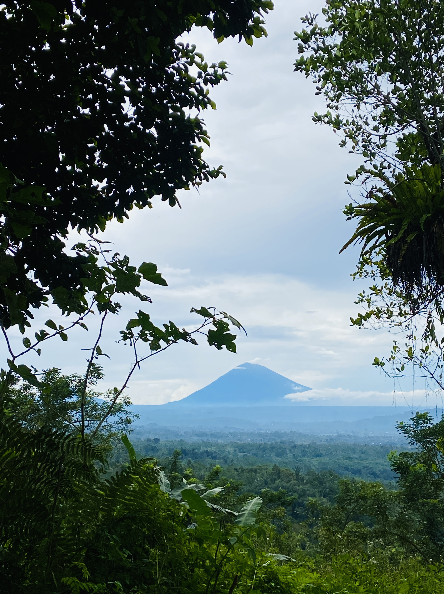
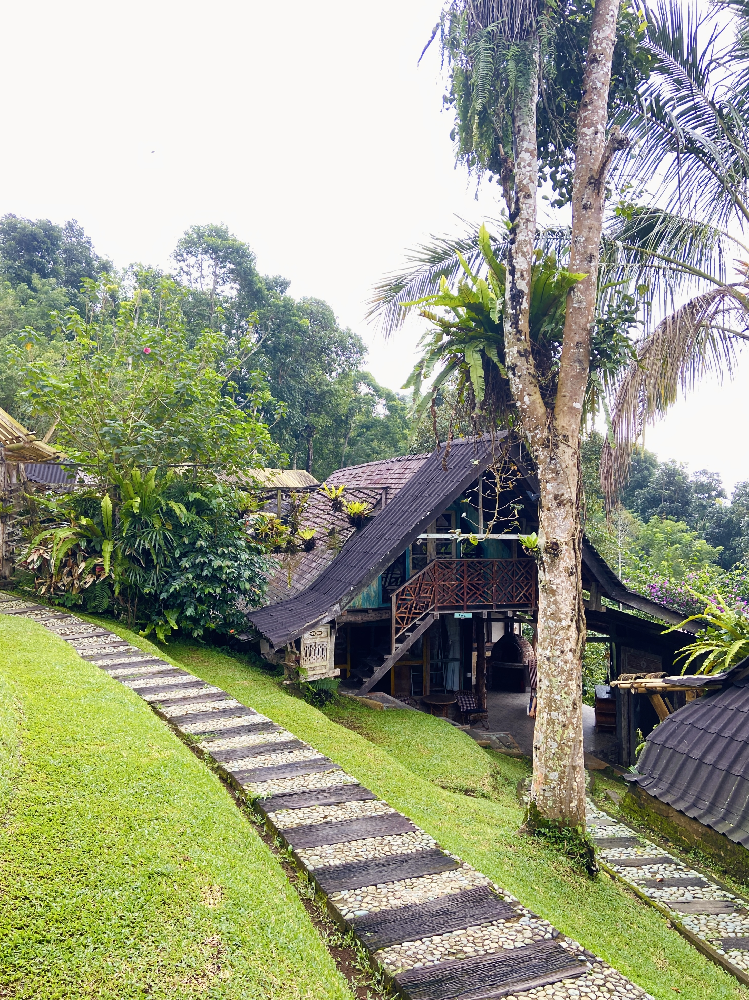
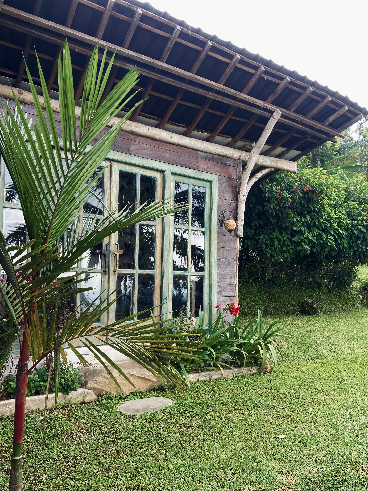
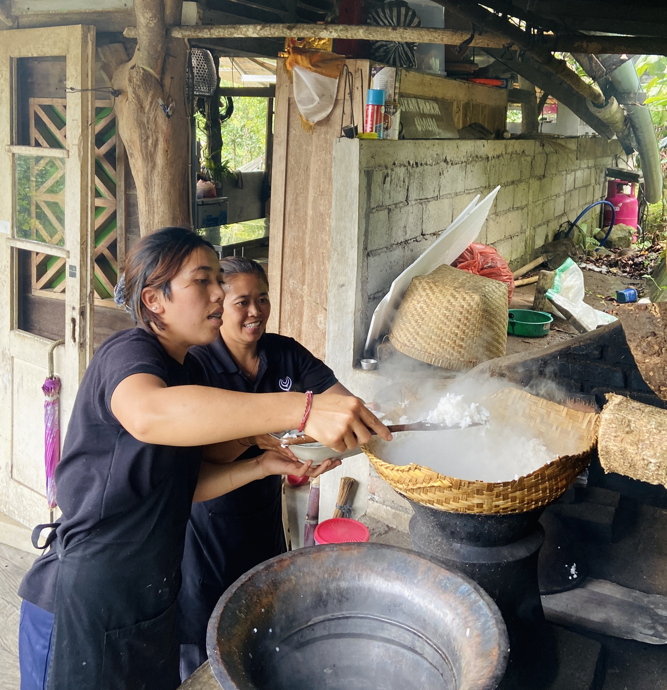
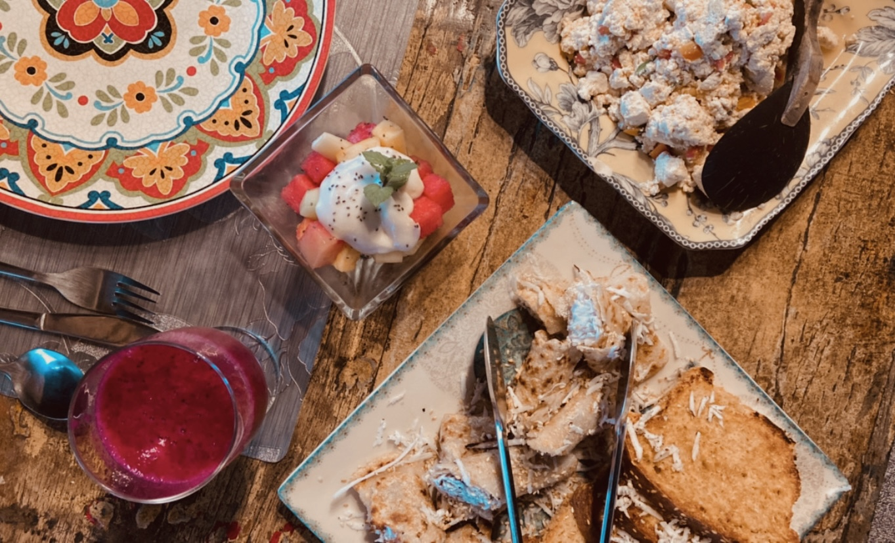
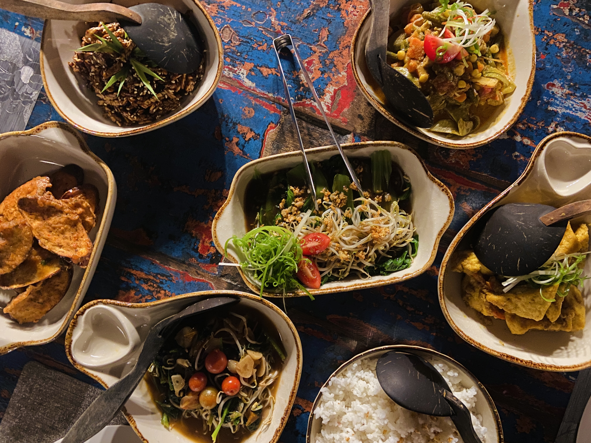
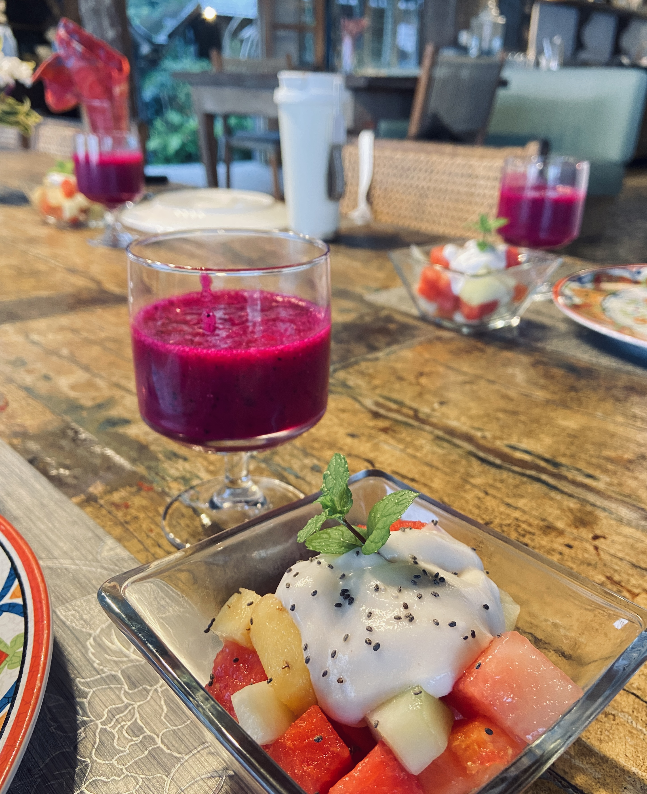

IGNI Retreat · Bali · 7 Days
峇里島深度轉化七日營
在喧囂的決策邊緣，找回身體最純粹的定錨點。
你是否也有這樣的時刻
拼命努力工作、賺更多錢、開好車住好房，但總覺得心裡空了一塊？
連療癒都要很努力，去上一堆課程，把身體搞得很累，但生活感覺也沒變比較好？
身體發出的訊號，你已經很久沒有認真聽了。疲憊、緊繃、那個說不上來的空洞感。
在某個夜深人靜的時刻，心裡不自覺地飄出一句懷疑：「這真的是我要的嗎？」
這趟旅程，為那些已經準備好
認真對待自己生命的人而設計。
關於這趟旅程
七天，你將完整走過 IGNI Method 五層工作地圖——土、水、火、風、空——每一層都有對應的呼吸工作、知識課程與整合空間。
每一天的呼吸都是層層推進的基礎。
峇里島的火山、溫泉、瀑布、星空——每一個地景都是課程的一部分。你用身體和這個地方真正相遇。
The IGNI Approach
這趟重生之旅，會透過重生呼吸、結合神經科學與心理學知識，建立在清晰的邏輯與可重複的系統之上。
這是一個動態的、需要你親身參與的過程。邀請你帶著覺知來，帶著好奇心進入，讓身體真實感受每一個時刻的變化。當身體鬆開了，改變就自然發生了。
結束這七天、連續九場重生呼吸後，
你將會完整了解並掌握呼吸方法，
並且能夠為自己做重生呼吸。
為何我們選在峇里島
峇里島最重要的兩座山，在島民心中宛如神的居所、生活的靈性軸心。這裡的人們敬天地、禮神明，家家戶戶可見祭祀、花供。這不是迷信，這是與自然萬物共生，與內在神性的致意。
莊園主人從歐洲返鄉，決定以生物動力農法開拓這片土地。所有建設以自然為基礎，用最少的破壞與之共生。你所看到的建物，皆是天然木材、竹子、廢物再生建構而成。或許不如市區度假酒店那樣富麗堂皇，但這樣充滿手感的建築之美，對我們來說是真正的自然奢華。


呼吸，就是生命。我們想要將這樣充滿生命力的場域，帶入課程之中。
What We Eat




這七日的旅程，每日餐食皆由莊園夥伴們親自料理。早晨會遇見夥伴們提著籃子上山，摘採新鮮蔬菜，用傳統的竹編容器炊飯。對我們來說，這是最奢華的禮物。
將順應宇宙時序、自然法則的食物吃下肚，也是在幫助我們調頻。自然土地、場域、食物都在支持著我們的蛻變，而我們能為自己做的，就是好好呼吸。
全程蔬食，用最清淨的身體，打開覺知，體會生命的每一刻。
Seven Days · One Journey
每一天都是一個完整的宇宙。向右滑動，展開你的旅程。
準備好了，就從這裡開始
名額有限，且每一位參與者在出發前都會經過一次前導對話——確認這趟旅程與你當下的狀態真正契合。
· 本期名額有限 · 申請後 48 小時內回覆 ·
前導對話的目的，是讓你和我們都確認這是對的時機。
IGNI Method
重生之旅是完整的沈浸式體驗，其不可取代性在於進程的連續性，這種疊加效應所能帶來的翻轉是超乎預期的。